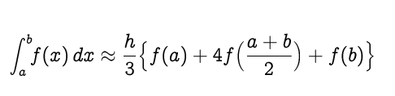
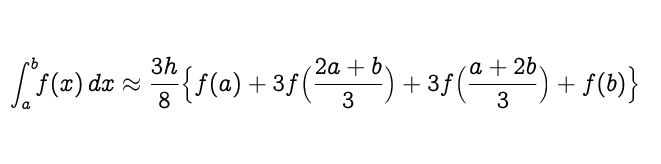
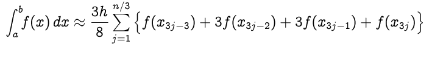

La regla de Simpson reemplaza la suma de áreas de los trapecios por la suma de las
áreas situadas por debajo de las parábolas para aproximar la integral en un intervalo definido.
Al igual que en la regla de los trapecios dividimos el intervalo [a , b] en n intervalos de igual
longitud ( n deberá ser un numero para).
Como se muestra en el diagrama anterior, el integrando f(x) es aproximado por un
polinomio de segundo orden, el interpolante cuadrático es P(x).
Sigue la aproximación
Reemplazando (b-a)/2 como h, obtenemos
Como puedes ver, hay un factor de 1/3 en la expresión anterior.
Por eso, se llama la Regla de 1/3 de Simpson,
si una función es altamente oscilatorio o carece de derivados en ciertos
puntos, entonces la regla anterior puede no producir resultados precisos.
Una forma común de manejar esto es usando el enfoque de la regla compuesta
de Simpson. Para ello, dividir [a,b] en pequeños subintervalos, y luego aplicar
la regla de Simpson a cada subintervalo. Luego, sumar los resultados de cada
cálculo para producir una aproximación sobre la integral completa.
Si el intervalo [a,b] se divide en n subintervalo, y n es un número
par, la regla compuesta de Simpson se calcula con la siguiente fórmula:
La regla de 3/8 de Simpson es similar a la regla de 1/3 de Simpson, con
la única diferencia de que, para la regla de 3/8, el interpolante es un
polinomio cúbico. Aunque la regla de 3/8 utiliza un valor de función más,
es aproximadamente dos veces más precisa que la regla de 1/3.
La regla de 3/8 de Simpson establece:
Reemplazando (b-a)/3 como h, obtenemos:
La regla de 3/8 de Simpson para n intervalos (n debería ser un múltiplo de 3):
